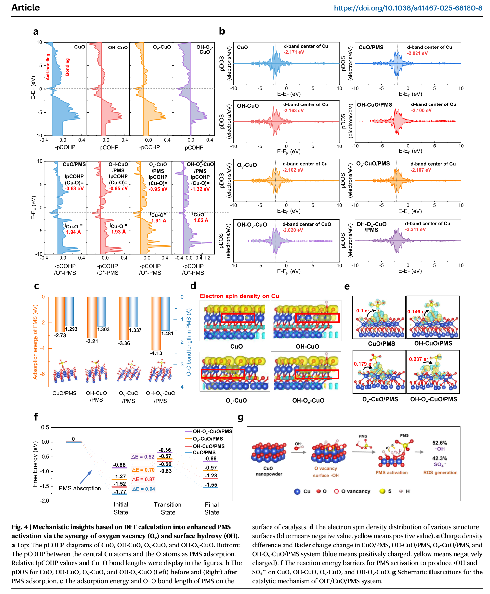
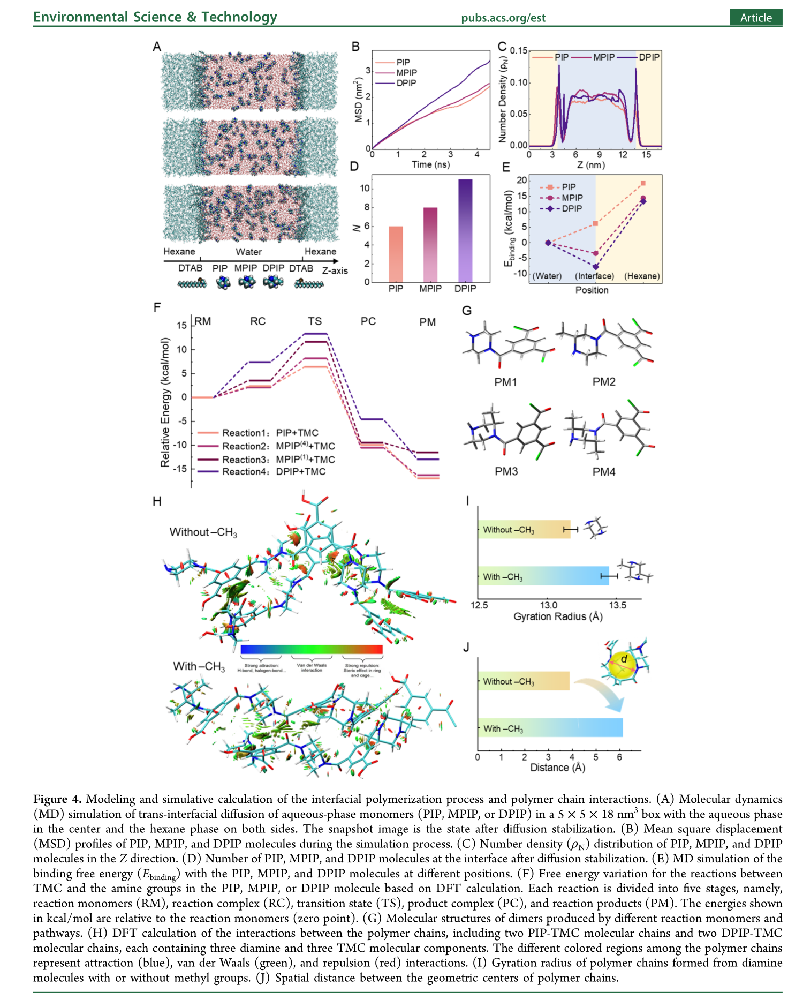
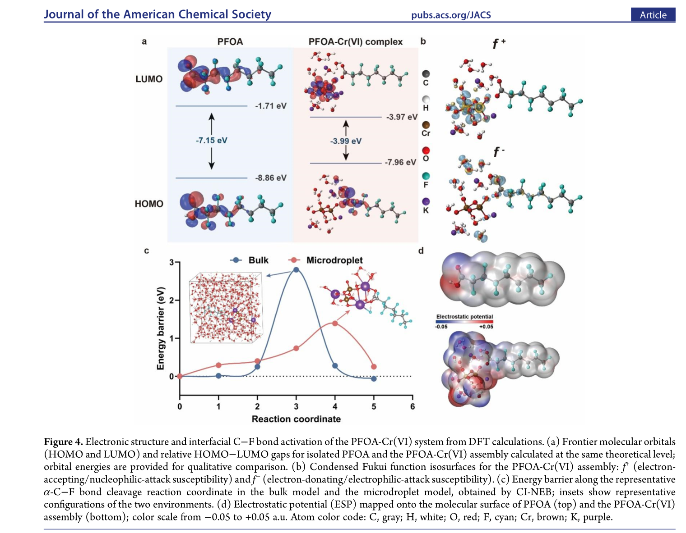

CORE CAPABILITY
AI項目


02 SIMULATION
計算模擬


ADVANCED COMPUTATIONAL SCIENCE
查看全部代表案例 →
高端計算模擬專題
面向催化、膜分離與複雜環境界面，提供論文級 DFT / MD / AIMD 與機理分析。

CATALYSIS & DEFECT ENGINEERING
催化機理與缺陷工程
氧空位、單原子/活性位點、界面電子轉移、反應路徑與 PMS/O₃/PI 活化機理。
活性位點識別 · 缺陷調控 · 電子轉移 · 反應路徑
代表案例 · Nature Communications

MEMBRANE & MOLECULAR INTERFACE
膜分離與分子界面
界面聚合、自由體積、擴散、溶劑化與膜結構—傳質—選擇性的多尺度關聯。
界面聚合 · 自由體積 · 擴散輸運 · 選擇性來源
代表案例 · Environmental Science & Technology

COMPLEX INTERFACIAL REACTION
複雜污染物界面反應
PFAS、重金屬、微液滴與複雜環境界面的富集、協同反應、C–F 鍵活化和能壘解析。
界面富集 · 協同反應 · C–F 鍵活化 · 反應能壘
代表案例 · Journal of the American Chemical Society
CUSTOM ADVANCED SIMULATION
高端計算方案定制
針對非標準科研問題，根據實驗現象與目標機理組合 DFT、MD、AIMD、反應路徑與多尺度分析。
代表案例來源： Nature Communications · JACS · Environmental Science & Technology · Angewandte Chemie · Advanced Functional Materials查看全部代表案例 →
03 CHARACTERIZATION & TESTING
表徵&檢測


REPRESENTATIVE ENVIRONMENTAL PROJECTS
環境檢測代表性項目
精選環境檢測中的代表性項目，覆蓋新污染物、温室氣體、微塑料、水質、土壤及非常規方法開發；更多具體指標可進入項目查詢。
EMERGING CONTAMINANTS
PFAS及新污染物精準檢測
覆蓋 PFAS、農藥及代謝物、抗生素、藥物、激素等目標物篩選、定量與產物鑒定。
查看項目 → GREENHOUSE GAS温室氣體精準檢測
面向土壤與環境樣品中的 CO₂、CH₄、N₂O 等温室氣體監測與排放分析。
查看項目 → MICROPLASTIC ANALYTICS微塑料及裂解微塑料分析
支持顆粒計數、粒徑與形貌分析、聚合物識別及來源分析。
查看項目 → ROUTINE WATER TESTING水質常規檢測
覆蓋 pH、電導率、TDS、COD、DOC/TOC、TN/TP、離子及元素/重金屬等 30 項。
查看30項 → ROUTINE SOIL TESTING土壤常規檢測
覆蓋基礎理化、氮磷養分、離子、碳/腐殖質、元素/重金屬及生態指標等 35 項。
查看35項 → METHOD DEVELOPMENT綜合檢測與方法開發
針對複雜基質、新目標物及非常規科研問題設計前處理、儀器路線、定量與質量控制方案。
查看項目 →05 SUPPLIES
耗材儀器


 AI/模擬
AI/模擬 表徵&檢測/環境/耗材
表徵&檢測/環境/耗材